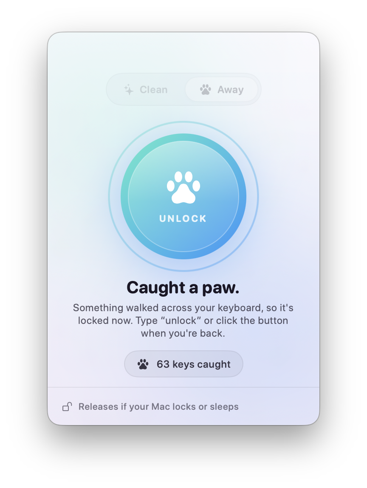
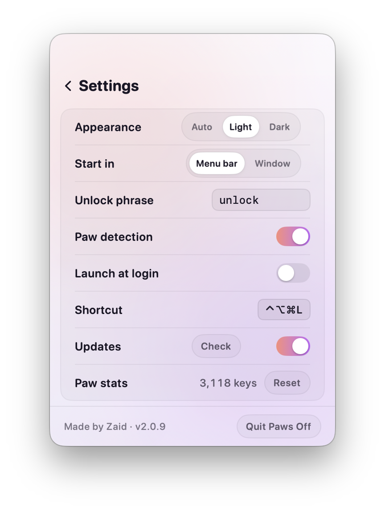

Pause your keyboard
with one click.
Wipe it down without typing gibberish, or step away without your cat writing your emails. Free for Mac and Windows.
curl -fsSL https://enigmaticzee.github.io/PawsOff/install.sh | bashPaste into Terminal. It installs Paws Off into Applications and opens it, without the "Open Anyway" step (it isn't notarized by Apple yet). See what the command does.
irm https://enigmaticzee.github.io/PawsOff/install.ps1 | iexPaste into PowerShell. It installs Paws Off just for you (no admin rights) and starts it, without the SmartScreen warning. See what the command does.
brew install --cask enigmaticzee/tap/paws-offThen open Paws Off once from Applications and click Open Anyway in System Settings → Privacy & Security. Paws Off updates itself after that.
or download it
Downloaded copies ask you to confirm once: on a Mac, System Settings → Privacy & Security → Open Anyway; on Windows, More info → Run anyway. Step-by-step
Your cat's first email: blocked.
Forgot to lock? When a paw lands on the keys, Paws Off spots it and locks the keyboard before anyone hits send.
It counts held keys (4 at once, or 2 for 3 seconds) and never reads what you type.

Two modes, one click
For cleaning your keyboard, and for leaving your computer around curious paws.
Clean mode
Every key ignored, even media keys. Your trackpad keeps working, so you can always click Unlock. Add a timer and it unlocks itself.
Away mode
Lock it and walk away. Downloads and calls keep running. Type your unlock word to get back in: pets can't spell.
Paw detection
Forgot to lock? If a paw lands on the keyboard, Paws Off notices the pile of held keys and locks for you.
Never locks you out
The keyboard comes back the moment your computer locks, sleeps or switches user, so you can always type your password.
Out of the way
Lives in your menu bar or system tray. Click the paw, or use the shortcut from anywhere: ⌃⌥⌘L on Mac, Ctrl+Alt+Shift+L on Windows.
Light, dark, auto
Follows your system, or pick a side. Updates arrive on their own, so you don't have to think about it.
Private by design
An app that can see key presses has to earn your trust. Here's the deal.
- Nothing you type is stored or sent. While locked it remembers only the last few characters, just enough to spot your unlock word, and forgets them on unlock.
- Paw detection counts keys, never reads them. It only looks at how many keys are held, and for how long.
- One network request: the update check. It asks GitHub whether there's a newer version. You can turn it off.
- Open source. Every line is on GitHub, MIT licensed. Found a problem? See the security policy.
